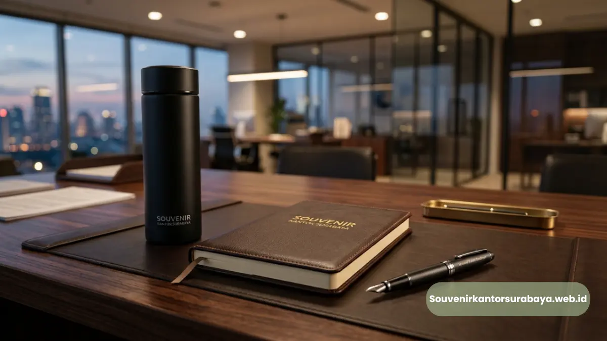

- Apa Itu Gift Set Kantor dan Mengapa Penting bagi Perusahaan?
- Kapan Waktu yang Tepat Menggunakan Gift Set Kantor?
- Bagaimana Memilih Gift Set Kantor yang Tepat untuk Bisnis Anda?
- Apa Saja Isi Gift Set Kantor yang Paling Diminati?
- Berapa Kisaran Biaya Gift Set Kantor Custom Logo?
- Apa Kesalahan Umum saat Memilih Gift Set Kantor?
- Mengapa Memilih Souvenir Kantor Surabaya untuk Gift Set Kantor Anda?
Gift Set Kantor: Solusi Souvenir Korporat Elegan untuk Relasi Bisnis Anda
Gift set kantor adalah paket souvenir korporat berisi kombinasi barang fungsional bertema profesional, seperti alat tulis, tumbler, dan tas, yang dirancang untuk mempererat relasi bisnis, apresiasi karyawan, atau branding perusahaan. Pemilihan gift set yang tepat mencerminkan citra profesional perusahaan Anda di mata klien maupun mitra kerja.
- Gift set kantor berfungsi sebagai media branding sekaligus bentuk apresiasi kepada klien, mitra, dan karyawan.
- Kombinasi isi gift set idealnya menyeimbangkan unsur fungsional dan nilai estetika agar tetap dipakai jangka panjang.
- Custom logo pada gift set kantor meningkatkan brand recall dan kesan profesional perusahaan.
- souvenir kantor surabaya menyediakan gift set kantor custom logo dengan kualitas premium dan proses pemesanan yang mudah.
- Harga gift set kantor bervariasi tergantung jumlah item, bahan, dan teknik custom yang dipilih.
Apa Itu Gift Set Kantor dan Mengapa Penting bagi Perusahaan?
Gift set kantor adalah kumpulan barang souvenir yang dikemas menjadi satu paket untuk keperluan korporat, mulai dari penyambutan klien, hadiah akhir tahun, hingga apresiasi karyawan berprestasi. Berbeda dengan souvenir tunggal, gift set memberikan kesan lebih menyeluruh dan berkelas karena disusun secara tematik.
Bagi perusahaan di Surabaya dan sekitarnya yang ingin memberikan kesan profesional sekaligus hangat, memesan gift set kantor melalui souvenir kantor surabaya menjadi solusi praktis karena proses produksi, custom logo, dan pengiriman dapat dikoordinasikan dalam satu layanan terpadu.
Kapan Waktu yang Tepat Menggunakan Gift Set Kantor?
Gift set kantor paling sering digunakan pada momen strategis yang membutuhkan kesan positif dan berkesan bagi penerimanya. Beberapa momen yang umum menjadi kebutuhan gift set kantor antara lain penyambutan klien baru, perayaan ulang tahun perusahaan, seminar dan pelatihan internal, hadiah akhir tahun untuk mitra kerja, hingga bingkisan Lebaran atau Natal untuk relasi bisnis.
Pada momen-momen tersebut, gift set berfungsi ganda: sebagai simbol penghormatan sekaligus sarana promosi tidak langsung melalui logo yang tercetak pada produk. Perusahaan yang rutin mengadakan acara korporat sebaiknya memiliki stok gift set kantor yang siap digunakan kapan saja, sehingga tidak terburu-buru saat momen penting tiba.
Baca Juga
Bagaimana Memilih Gift Set Kantor yang Tepat untuk Bisnis Anda?
Memilih gift set kantor yang tepat memerlukan pertimbangan pada tiga aspek utama: kegunaan produk, kualitas bahan, dan kesesuaian dengan identitas brand perusahaan.
Kegunaan produk menjadi prioritas pertama. Item yang sering dipakai sehari-hari, seperti tumbler, notebook, atau tas laptop, memiliki tingkat retensi lebih tinggi dibanding barang dekoratif semata. Semakin sering produk digunakan, semakin sering pula logo perusahaan terlihat oleh penerima maupun orang di sekitarnya.
Kualitas bahan turut menentukan persepsi kelas perusahaan. Gift set dengan bahan premium seperti kulit sintetis berkualitas, stainless steel, atau kayu solid memberikan kesan lebih eksklusif dibanding bahan plastik biasa, meskipun selisih biaya produksinya relatif tidak signifikan.
Kesesuaian dengan identitas brand mencakup pemilihan warna, jenis font pada logo, dan gaya kemasan yang selaras dengan citra perusahaan. Perusahaan dengan citra modern-minimalis umumnya lebih cocok dengan kemasan monokrom dan desain simpel, sementara perusahaan dengan citra hangat-tradisional dapat memilih kemasan dengan sentuhan warna earth tone.
Tim di souvenir kantor surabaya dapat membantu Anda menyesuaikan ketiga aspek tersebut sesuai kebutuhan dan anggaran perusahaan, mulai dari pemilihan item hingga desain kemasan custom.

Apa Saja Isi Gift Set Kantor yang Paling Diminati?
Isi gift set kantor yang paling diminati umumnya merupakan kombinasi alat tulis premium, tumbler custom logo, dan tas atau pouch multifungsi.
Kombinasi populer lainnya mencakup notebook eksekutif dengan pulpen metal, gift set kopi dan tumbler untuk kesan hangat dan personal, serta paket kerja hybrid berisi charger portable dan organizer kabel untuk mengakomodasi kebutuhan kerja fleksibel saat ini.
Pemilihan kombinasi sebaiknya disesuaikan dengan profil penerima; gift set untuk klien korporat besar cenderung lebih formal, sementara gift set untuk komunitas internal dapat lebih santai dan personal.
Berapa Kisaran Biaya Gift Set Kantor Custom Logo?
Biaya gift set kantor custom logo umumnya ditentukan oleh jumlah item dalam satu set, bahan yang dipilih, teknik custom logo, serta jumlah pesanan minimum.
Secara umum, semakin banyak jumlah pesanan, semakin efisien pula harga per unit karena biaya produksi custom logo (seperti bordir, embossing, atau cetak UV) dapat dibagi dalam skala lebih besar. Perusahaan yang memesan dalam jumlah besar untuk acara tahunan biasanya mendapatkan penawaran harga yang lebih kompetitif dibanding pemesanan satuan.
Faktor lain yang memengaruhi biaya adalah tingkat kerumitan desain logo dan jenis kemasan tambahan seperti box eksklusif atau paper bag custom. Untuk mendapatkan estimasi biaya yang sesuai dengan anggaran dan kebutuhan perusahaan Anda, konsultasi langsung dengan tim souvenir kantor surabaya adalah langkah paling efisien, karena penawaran dapat disesuaikan dengan spesifikasi dan volume pesanan secara real-time.
Apa Kesalahan Umum saat Memilih Gift Set Kantor?
Kesalahan umum saat memilih gift set kantor meliputi mengabaikan fungsi produk, terlalu fokus pada harga murah tanpa memperhatikan kualitas, dan memesan mendekati tenggat waktu acara.
Kesalahan pertama adalah memilih barang yang terkesan menarik secara visual namun jarang digunakan penerima, sehingga nilai brand recall-nya rendah. Kesalahan kedua adalah memprioritaskan harga termurah tanpa mempertimbangkan daya tahan bahan, yang justru dapat menurunkan citra perusahaan jika produk cepat rusak.
Kesalahan ketiga adalah pemesanan mendadak, yang berisiko membatasi pilihan desain dan memaksa perusahaan menerima kualitas seadanya karena keterbatasan waktu produksi. Untuk menghindari ketiga kesalahan tersebut, sebaiknya perusahaan merencanakan kebutuhan gift set kantor minimal beberapa minggu sebelum acara berlangsung, sekaligus berkonsultasi dengan penyedia souvenir berpengalaman seperti Souvenir Kantor Surabaya agar proses produksi dan pengiriman berjalan tepat waktu.
Mengapa Memilih Souvenir Kantor Surabaya untuk Gift Set Kantor Anda?
Souvenir Kantor Surabaya menghadirkan layanan gift set kantor custom logo dengan proses konsultasi personal, kualitas bahan terjaga, dan pengalaman melayani berbagai instansi serta perusahaan di wilayah Surabaya dan sekitarnya.
Keunggulan utama layanan ini terletak pada fleksibilitas kombinasi item, mulai dari paket sederhana untuk kebutuhan internal hingga paket premium untuk klien korporat besar. Tim desain turut membantu memastikan penempatan logo perusahaan terlihat rapi dan proporsional pada setiap produk, sehingga hasil akhir gift set benar-benar mencerminkan identitas brand Anda.
Jika perusahaan Anda sedang mempersiapkan acara korporat, penyambutan klien, atau program apresiasi karyawan, jangan biarkan momen penting berlalu tanpa kesan mendalam. Kunjungi souvenirkantorsurabaya.web.id sekarang untuk konsultasi gratis dan dapatkan penawaran gift set kantor custom logo yang sesuai dengan kebutuhan dan anggaran perusahaan Anda.
- Gift set kantor adalah investasi branding sekaligus bentuk apresiasi yang efektif untuk klien maupun karyawan.
- Pilih isi gift set berdasarkan fungsi, kualitas bahan, dan kesesuaian dengan identitas brand perusahaan.
- Rencanakan pemesanan gift set kantor jauh-jauh hari agar mendapat kualitas dan harga terbaik.
- Konsultasikan kebutuhan gift set kantor custom logo perusahaan Anda bersama souvenir kantor surabaya untuk hasil yang profesional dan tepat waktu.

Hawa Nadira
Tim penulis CorporateGifts ID berfokus pada strategi souvenir kantor, merchandise korporat, dan inovasi brand untuk klien B2B.
Keahlian: Branding perusahaan, produksi souvenir, paket event, desain materi promosi.
Artikel Terkait

Ide Souvenir Kantor Elegan untuk Mitra Bisnis
Rekomendasi souvenir kantor elegan yang dapat meningkatkan hubungan bisnis Anda dengan mitra dan relasi kerja.
Baca Selengkapnya
Ragam Souvenir Kantor Elegan untuk Mitra Bisnis di Surabaya
Berbagai pilihan souvenir kantor eksklusif di Surabaya untuk mempererat kemitraan bisnis.
Baca Selengkapnya
Souvenir Kantor untuk Event Korporat Surabaya yang Elegan dan Siap Pakai
Souvenir kantor untuk event korporat Surabaya adalah merchandise yang disiapkan khusus untuk mendukung acara bisnis.
Baca Selengkapnya